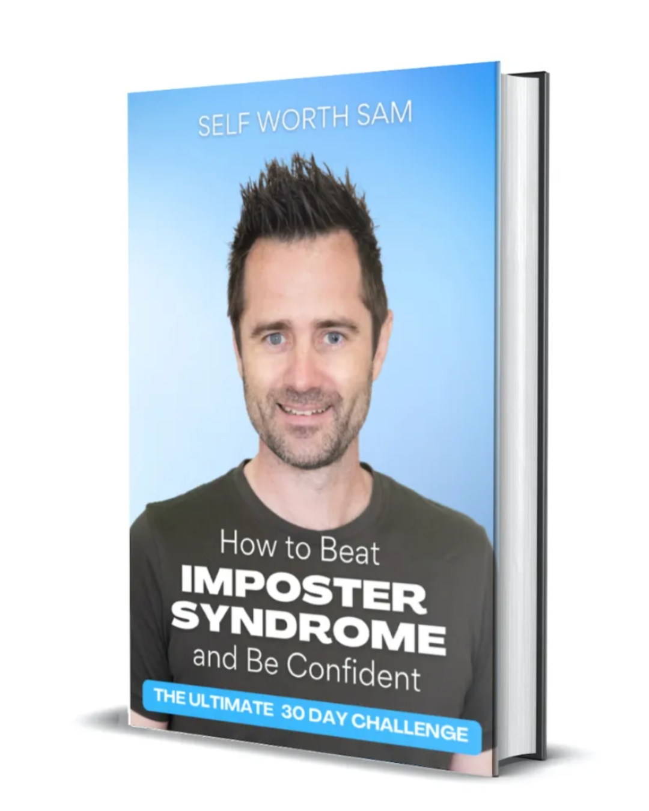

Clarity Is the Competitive Advantage
Sam Osborne
The Neurosurgeon of Self Worth
Keynote Speaker on Clarity, Self-Worth & Leadership Under Pressure
Check Availability
Sam Osborne
The Neurosurgeon of Self Worth
Keynote Speaker on Clarity, Self-Worth & Leadership Under Pressure
Check Availability
Sam Osborne helps leaders and high-responsibility professionals remove internal conflict so they can perform with clarity, composure, and confidence under real-world pressure.
Check Availability
Signature Keynotes
Two complementary programs designed to help leaders and high-responsibility professionals restore ordered perception and maintain composure when stakes are highest.
Clarity isn't confidence. It's ordered perception under pressure.
Vision science leaders · Healthcare & medical conferences · Innovation & research summits · Corporate leadership retreats
How to Stop Taking Things So Personally
Legal associations · Property management · Community leadership · High-accountability professionals in conflict-rich environments
Presented with Dave Graf, Esq., community association attorney
Composure Through Conflict
Leadership retreats · Annual conferences · Company offsites · Sales & strategy kickoffs · Culture & people-development programs
Industry associations · Academic conferences · Leadership summits · Global development and innovation initiatives
Ophthalmology & optometry groups · Vision research conferences · Medtech & device innovators summits
Professionals lean in, connect the science with the human impact, and leave inspired by practical tools they can apply immediately.
Memorable stories and strategies that link restored sight to restored self-worth—turning big ideas into long-term clarity, confidence, and cultural ROI.
Researchers and industry leaders walk out ready to lead teams, patients, and organizations with steady presence under pressure.



The Ultimate 30-Day Challenge
Industry Journals
Ready to bring clarity to your next event?
Let's discuss how Sam can support your leaders.